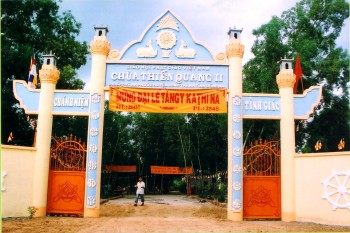
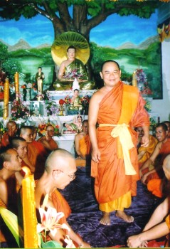
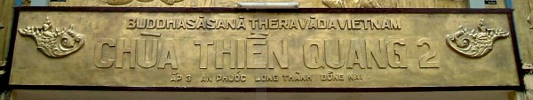
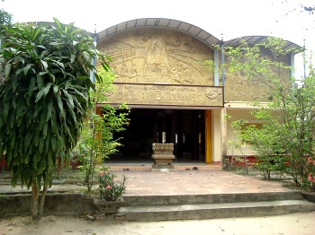
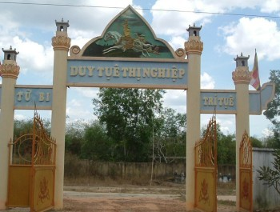
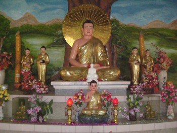
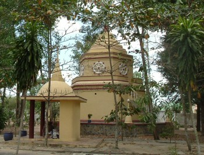
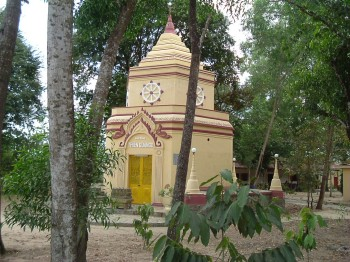
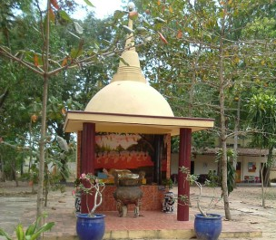

|
BuddhaSasana Home Page |
Vietnamese, with Unicode Times font |
Chùa Thiền Quang II
219 Ấp 3, Xã An Phước, Huyện Long Thành,
Tỉnh Ðồng Nai
|
 |
|
 |
Source: Tỳ khưu Chánh Định (11-2004)
|  | |
|  |  |
|  |  |
|  |  |
Source: Bình Anson (02-2006)
last updated: 11-04-2006